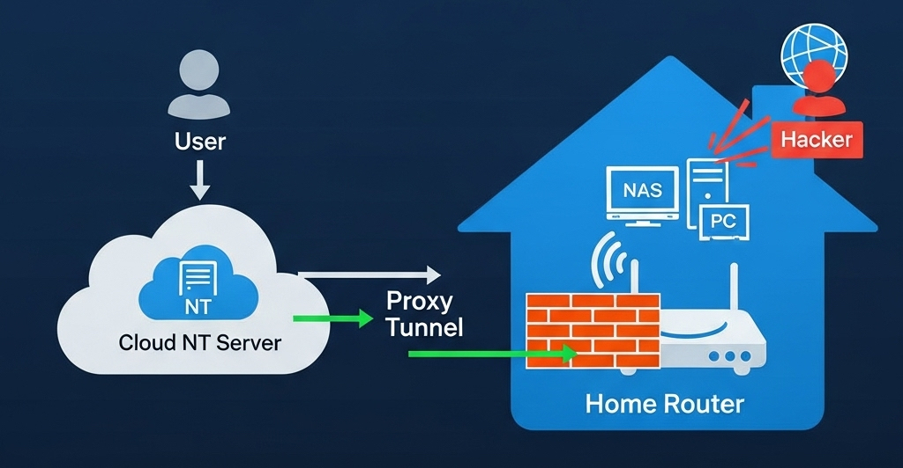
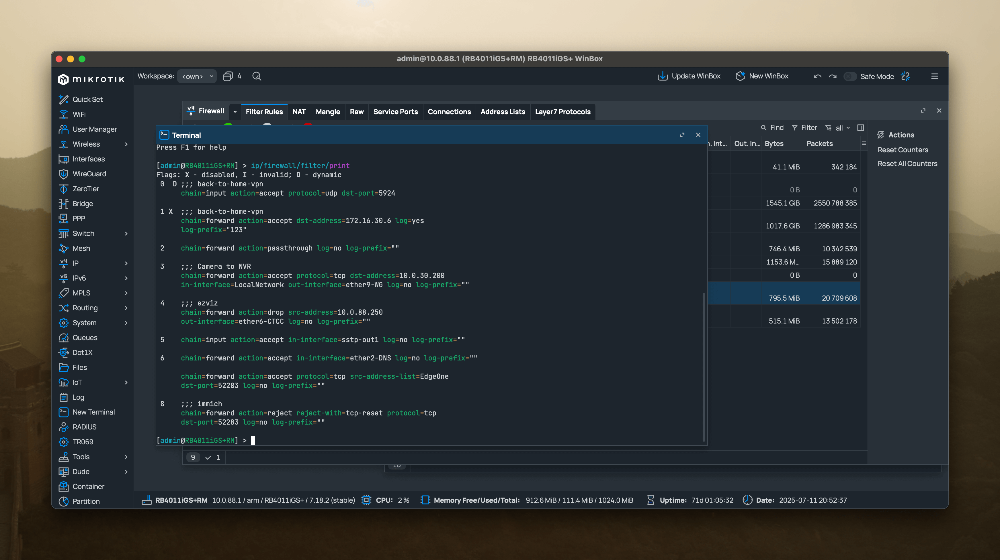

NextTerminal：家庭内网安全访问解决方案
家庭内网安全访问新方案：Next-Terminal的技术实践与应用
在信息技术快速普及的今天，越来越多的家庭用户搭建起属于自己的服务器、小型 NAS 系统、家庭自动化控制中心等内部 IT 架构。与此同时，如何安全、高效、低成本地从公网访问这些设备，成为一个亟需解决的问题。
开源项目 Next-Terminal（简称 NT）为家庭用户提供了一个优雅的解决方案。它不仅开源、免费，而且资源占用极低（仅约 200MB），性能极高，可以轻松部署在阿里云、腾讯云、轻量云等公网节点上，承担所有流量入口，并将请求安全地转发至家庭内网中的各种服务，真正实现了安全代理与权限控制统一入口管理。
一、家庭网络公网暴露的安全隐患分析
1.1 常见家庭网络暴露方式
假设你在家中部署了一个网站或者 NAS 设备，并希望在外网访问，常见的做法是：
- 光猫直接进行端口映射（公网 IP）；
- 直接域名解析至家庭公网 IP（动态 DNS）；
- 使用 IPv6 地址直连
1.2 潜在安全风险，公网攻击风险高
无论你使用动态域名 + DDNS 还是公网 IPv6 地址，只要设备暴露在公网，就意味着：
- 被黑客扫描的几率大幅增加；
- 任何人只要知道你的 IP 地址就能尝试连接；
- 一旦服务有漏洞（如老旧 NAS、PHP 漏洞），攻击者可能直接入侵内网。
在 IPv4 中，我们普遍使用 NAT（地址转换）将多个内网设备通过一个公网地址上网。但在 IPv6 中，每个设备都可以拥有公网地址，虽然这有助于直连通信，却也带来新的隐患，例如：
- 地址可预测性，攻击者可通过已知地址推测整个/60前缀范围；
- 家中每台设备（如路由器、NAS、摄像头、智能电视）都有自己的 IPv6 地址；
- 攻击者只需知道你服务器的一个 IPv6 地址，即可推测出整个网络前缀范围；
- 由于 IPv6 地址空间虽大，但仍可进行特定范围段的端口扫描与暴力测试；
- 很多家庭设备的防火墙并未对 IPv6 有严格配置，一旦开放了某个端口，可能直接被访问。
安全警示：IPv6的全球可达性特性使家庭设备更容易被定位和攻击。
二、Next-Terminal 如何帮你解决以上问题？
Next-Terminal 采用“统一入口代理+精细化权限控制”机制，主要特点包括：
- 不再暴露内部端口到公网；
- 只对可信入口开放端口；
- 支持细粒度访问控制与登录认证；
- 可审计、可管理、可授权访问你的服务。
graph LR
A[用户] --> B[NT 公网节点]
B --> C[家庭网关]
C --> D[内网服务]
场景模拟：将家庭内网网站安全暴露给公网
假设你家中部署了一个网站（如 http://192.168.1.100:8080），你想在外面访问它，但又不希望任何人都能直接连接。
传统做法：直接端口映射到公网，问题在于安全性欠考量
改进做法：使用 NT 的反向代理+权限验证
实施步骤（有公网地址）：
- 在公网服务器（如阿里云）上部署 Next-Terminal；
- 在路由器防火墙中仅允许公网服务器的 IP（如阿里云 IP）访问端口；
- 添加需要访问的资产（如内网网站）并添加端口映射；
- 启用认证、授权功能，包括多因素认证以及 Passkey 等；
- 外部用户通过 Next-Terminal 平台访问，身份校验后由公网服务器代理请求至内部目标服务。
实施步骤（无公网地址）：
- 在公网服务器（如阿里云）上部署 Next-Terminal；
- 在家庭路由器中部署 NT 安全网关（轻量容器或小型主机）；
- 将 NT 网关注册至 NT 平台；
- 添加需要访问的资产（如内网网站）；
- 启用认证、授权功能，包括多因素认证以及 Passkey 等；
- 外部用户通过 NT 平台访问，身份校验后由公网服务器代理请求至家庭网关，再转发至目标服务。

三、防火墙策略：只信任公网服务器，拒绝一切其它访问
为了进一步提升安全性，你可以在家中路由器或软路由中设置如下防火墙规则：
- 只允许 NT 公网服务器 IP（如阿里云节点）访问指定端口（如 NAS 的 8080）；
- 阻断其他任何来源 IP 的访问请求。
这种方式实现了“只有我信任的服务器能访问我的家庭内网”，哪怕有人得到了你的公网 IP 地址，也无法连接设备。
# 示例防火墙策略（假设家庭网关使用 iptables）
# 允许阿里云IP访问8080
iptables -A INPUT -p tcp -s <NT公网IP> --dport 8080 -j ACCEPT
# 拒绝其它IP访问8080
iptables -A INPUT -p tcp --dport 8080 -j DROP

四、与传统 VPN、FRP 方案对比
| 特性 | VPN | FRP | NextTerminal ✅ |
|---|---|---|---|
| 安全性 | 高（需硬件） | 中等（需配置） | 高（精细授权） |
| 易用性 | 外部访问需客户端 | 配置复杂 | 网页访问即可 |
| 部署难度 | 简单（硬件） | 中 | 简单（容器部署） |
| 用户权限管理 | ✅ 支持 | 不支持 | ✅ 支持 |
| 日志与审计 | 不便查询 | 不支持 | ✅ 支持 |
| 内网服务代理能力 | ✅ 自动配置 | 需端口映射 | ✅ 自动代理 |
五、延伸用途：不仅仅是访问网站
NextTerminal 不仅能代理网站，还能用于：
- 远程控制家庭 Linux 主机（SSH）；
- 管理内网 Windows 桌面（RDP）；
- 查看 NAS 文件目录（甚至WebDAV）；
- 访问摄像头管理后台；
- 接入 HomeAssistant、Aria2、Transmission 等家庭服务。
并且一切操作都有统一入口、统一身份认证。
致开发者：开源精神不应被辜负
Next-Terminal 是一款由国人开发、免费开源的安全运维平台，代码托管于 GitHub，开发者持续维护更新。如果你是开发者、运维人员或家庭用户，强烈建议：
- 亲自体验这款软件的部署流程与使用方式；
- 给项目一个 Star ⭐️；
- 在你的博客或社群宣传它；
- 提出建议或贡献文档，一起完善它！
📘 参考资料与推荐链接
- 项目地址：https://github.com/dushixiang/next-terminal
- 文档中心：https://next-terminal.dushixiang.com
- IPv6 安全性讨论（Google security paper）：https://research.google/pubs/pub46246/
- 家庭用户安全配置建议（知乎）：https://zhuanlan.zhihu.com/p/620203743
结语
Next-Terminal 不仅是一款优秀的企业级远程运维平台，它也非常适合家庭用户使用。通过构建统一、安全的访问入口，我们不再需要担心公网攻击、不再依赖繁琐的 VPN 配置，也不需要冒着暴露内网的风险。
家庭 IT 架构的安全，是每一个技术爱好者应当重视的课题。今天，从部署一个 Next-Terminal 开始，提升你的网络安全水平吧。